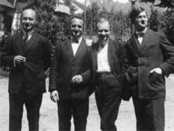
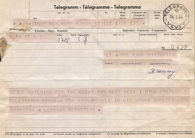

On entend trop rarement la musique de Paul Hindemith, en-dehors de quelques oeuvres symphoniques toujours les mêmes, Symphonie Mathis der Maler, Les 4 Tempéraments, Nobilissima Visione et Métamorphoses (sur des thèmes de Weber, issus des opus 10, 37 & 60). Cette négligence (ignorance ?) est fréquente chez les mélomanes pressés ou distraits qui ont peut-être vécu quelques expériences malheureuses à l'écoute d'oeuvres probablement mal choisies et dont la modernité décapante leur a semblé aggressive. Cependant, comme il arrive souvent, il suffit d'ouvrir les bonnes portes d'accès pour qu'un revirement d'opinion devienne possible. Il me semble en tous cas que chacun devrait pouvoir faire aussi bien que le public des Young People's Concerts (Vol. 2) présent lors de la séance du 23 février 1964 : ce dimanche-là, Leonard Bernstein a tenté le pari d'expliquer à des enfants attentifs la musique de Paul Hindemith, disparu depuis peu.
Dans une hypothétique "Histoire de la Musique allemande", Paul Hindemith (1895-1963) apparaîtrait chronologiquement comme le dernier maillon important d'une chaîne reliant, pour faire court, J-S Bach (1685-1750) à Richard Strauss (1864-1949). Et pourtant, la place qu'il y occuperait demeurerait marginale, non parce que le musicien aurait démérité mais plutôt parce qu'on peinerait à insérer son oeuvre dans le courant de la (grande) tradition germanique. Il y apparaîtrait, en particulier, comme l'un des rares musiciens germaniques de son temps ayant revendiqué de s'affranchir du chromatisme wagnérien, omniprésent dans le paysage musical de l'époque. Il l'a fait avec tous les moyens à sa disposition, brouillant les pistes au risque de perdre en chemin quelques auditeurs décontenancés par une certaine versatilité stylistique.
Note. Le cours de la musique européenne a connu un virage essentiel lors de la publication de l'oeuvre de Richard Wagner. Peu importe que cette oeuvre ait été essentiellement opératique, la révolution qu'elle a engendré a "contaminé" tous les secteurs de l'activité musicale. Wagner a intégré toutes sortes de nouveautés en un tout cohérent que personne désormais ne pouvait ignorer : le principe cyclique, dont la notion de leitmotiv n'est qu'un aspect fort particulier, l'élargissement de la gamme tonale classique (à 7 notes par octave) à tout l'espace chromatique (à 12 notes par octave) et surtout l'organisation du discours mélodique en une vaste progression continue éradiquant les notions rendues obsolètes de couplets et de refrains. En France et en dépit d'un sursaut nationaliste généré par la défaite de 1870, nombre de musiciens (Chabrier, Dukas, d'Indy, ...) ont fait le pélerinage de Bayreuth, pour de vrai ou en pensée, acquiesçant à ces idées nouvelles. Même Fauré et Debussy pourtant peu suspects de pactiser avec "l'ennemi" ont laissé entendre, plus ou moins consciemment, dans leur opéra respectif, Pénélope et Pelléas & Mélisande, que les bases de cette nouvelle rhétorique ne les laissaient pas indifférents. Dès lors, tous les musiciens occidentaux ont été confrontés au problème de digérer le message wagnérien ou de lui trouver des échappatoires. Celles-ci fleurirent effectivement, au tournant du 20ème siècle, en une explosion de (formal)ismes de toutes tendances : impressionnisme, expressionnisme, symbolisme, dodécaphonisme, futurisme, constructivisme, motorisme, ... .
En Russie (et en peinture), divers courants artistiques sont nés d'une volonté d'ignorer les diktats esthétiques occidentaux : le futurisme, glorifiant l'avenir de la société machiniste, le constructivisme, privilégiant les formes simples construites avec la règle et le compas, et le suprématisme, louant l'abstraction. Quelques musiciens (Mossolov, Schostakovitch) ont tenté d'épouser ces mouvements, le temps que la répression stalinienne vienne mettre un terme à leur joyeux anarchisme. L'extravagant opéra, Le Nez, du jeune Schostakovitch (22 ans !) est témoin de l'incroyable inventitivité des artistes russes encore en liberté en ce temps béni où tout était encore permis (Cette bonne production du Royal Opera House, en anglais contre toute attente, commence en 9:20). Hindemith a proposé sa variante du courant futuriste dans l'opéra, Neues vom Tage (1929, Nouvelles du Jour, l'histoire d'un divorce compliqué).
A Vienne, l'école d'Arnold Schönberg a repoussé les limites du chromatisme bien au-delà de ce que Wagner avait pratiqué dans Tristan & Isolde : en tentant l'aventure des 12 notes par octave, sans désormais en privilégier aucune, il a lancé le mouvement dodécaphonique. Hindemith n'a jamais adhéré à ce courant et, en un sens, il l'a combattu dans le cadre de son enseignement (Cf infra).
Impression, soleil levant (Claude Monet)
En France, quelques musiciens emmenés par Claude Debussy ont réagi différemment au wagnérisme, en transposant en musique la recette de l'impressionnisme qui avait si bien fonctionné en peinture (Monnet, 1872). Le gigantisme orchestral d'Outre-Rhin était désormais concurrencé par des formules instrumentales intimistes où le raffinement sonore prenait le pas sur l'emphase. Deux guerres successives ayant encore creusé le fossé des ressentiments français à l'égard de l'Allemagne, un grand nombre de musiciens français se sont réclamés, par principe, de l'héritage de Debussy. Hindemith appréciait la technique impressionniste mais il ne l'a jamais pratiquée.
Le Cri (Edvard Munch)
En Allemagne, c'est l'expressionnisme qui a prospéré, favorisé par les turbulences des années 1920. Ce courant a privilégié l'urgence de l'expression à l'état brut. Le célèbre tableau, le Cri, du peintre (norvégien) Edvard Munch (Il en existe 5 versions, réalisées entre 1893 et 1917), n'a pas pour vocation d'être "beau" mais de (dé)peindre la frayeur sans autre commentaire. Il n'est pas aisé de trouver un équivalent musical à cette captation de l'émotion instantanée, en particulier parce que le tableau immortalise un instant précis alors que la musique se déroule dans le temps. C'est pourtant ce qu'Arnold Schönberg a essayé de faire (avant de se lancer dans l'aventure dodécaphonique) dans quelques oeuvres emblématiques (Pierrot lunaire). Cela nous ramène à Hindemith, qui a, en effet, trouvé une première source d'inspiration dans l'expressionnisme.
Elements biographiques
La famille Hindemith
Les informations qui suivent sont extraites d'archives officielles en libre accès. Hindemith a été le musicien que son père aurait rêvé être. Il n'a d'ailleurs pas vraiment eu le choix, recevant une éducation stricte telle qu'on ne l'imaginerait plus aujourd'hui. Supérieurement doué, le jeune Paul a appris avec facilité le piano, la clarinette et le violon (l'alto en prime); on raconte qu'il pouvait toucher la plupart des autres instruments de l'orchestre et en tirer un son acceptable.
Paul a eu un frère violoncelliste, Rudolf (Cf infra), et une soeur pianiste, Antonia, plus jeunes que lui. Ensemble, ils ont formé le "Frankfurter Kindertrio", entretenant la fièreté de leur père. Pleine d'admiration pour cette fraterie, la haute bourgeoisie de Francfort a d'ailleurs supporté financièrement la famille Hindemith.
Paul a poursuivi ses études supérieures, de violon & alto mais aussi de composition, au Conservatoire de Francfort. Elève brillant, il a obtenu, en 1916, un prix de la Fondation Mendelsohn, d'une valeur de 750 DM, pour son Quatuor à cordes n°1 (en ut majeur, opus 2). Cette oeuvre dévoile l'étonnante maîtrise de ce jeune étudiant d'à peine 21 ans.
Ses talents violonistiques ont également été appréciés, débouchant sur un engagement au titre de violon principal de l'orchestre de l'Opéra de Francfort, dirigé à l'époque par Ludwig Rottenberg (dont il épousera la fille Gertrud). Il est resté à ce poste de 1915 à 1923, avec une interruption dramatique entre 1917 et 1918 : conscrit tardivement, il a survécu miraculeusement aux tranchées et à la bataille des Flandres. Les années d'apprentissage au théâtre de Francfort furent essentielles à sa formation, lui permettant de découvrir "de l'intérieur" les grands opéras de son temps (Bela Bartok, Claude Debussy, Franz Schreker, Richard Strauss, ...). Ce fut aussi l'occasion de faire entendre ses premières créations du genre, dont un formidable tryptique composés de mini-opéras expressionnistes, Mörder, Hoffnung der Frauen (1919, Assassin, Espoir des Femmes !), Das Nusch-Nuschi (1921, une parodie pour marionnettes birmanes de (quelques tics choisis de) Wagner, Strauss, Mahler et Reger !) et Sancta Susanna (1921, le drame d'une religieuse prise d'un désir sacrilège pour le corps du Christ). Ces oeuvres volontairement provocatrices et/ou scandaleuses n'ont rien perdu de leur pouvoir de persuasion. Enregistrées par Gerd Albrecht pour le label Wergo, elles constituent un des plus beaux fleurons de l'oeuvre d'Hindemith. Si vous n'appréciez pas (l'opéra) reconnaissez à tout le moins l'originalité dont ce musicien de 25 ans était capable; sinon, cette chronique n'est probablement pas pour vous.
Parallèlement, son professeur de violon, Adolf Rebner, l'a invité à rejoindre le Quatuor portant son nom, d'abord comme second violon puis comme alto, à la demande de l'intéressé. Ce fut à nouveau l'occasion, pour Hindemith, de faire entendre sa dernière création du genre, le Quatuor à cordes n°2 (En fa mineur, opus 10).

Quatuor Amar
Déplorant que le Quatuor Rebner se cantonne dans un répertoire trop classique à ses oreilles, Hindemith l'a quitté, en 1921, pour rejoindre le Quatuor Amar, du nom de son premier violon fondateur, Licco Amar (Il l'a quitté huit ans plus tard, absorbé par d'autres fonctions). Je vous ai trouvé un enregistrement historique (1926) de cet ensemble dans le Quatuor n°4 (opus 22) : le son étant précaire, protégez vos oreilles et commencez prudemment en 9:32. La pochette ci-contre affiche les musiciens de l'ensemble, dont Paul et son frère Rudolf, à vous de les identifier.
Vers 1920, le Prince Maximilian zu Furstenberg avait fondé la Société des Amis de la Musique de Donaueschingen, dans le but d'encourager la création de jeunes compositeurs (En 1927, cette Société a déménagé à Baden-Baden). Des dizaines de candidats ont présenté leur dossier et ont été auditionnés et Hindemith s'est imposé comme le musicien le plus prometteur de son temps. Il a confirmé ces espoirs en publiant, dès 1920, son Quatuor n°3 (En ut majeur, opus 16), qu'il a lui-même créé au sein du Quatuor Amar.
Sa carrière étant définitivement lancée, il a pu conclure un accord d'exclusivité avec l'éditeur Schott de Mayence, qui lui a garanti un salaire mensuel décent. Vivant désormais confortablement de ses compositions, il a quitté son poste à l'Opéra de Francfort. Signe de sa réputation grandissante, il a fait partie des privilégiés ayant reçu commande d'un Concerto pour la main gauche de la part du pianiste, Paul Wittgenstein, qui avait perdu le bras droit pendant la guerre. Les 1000 US $ promis furent une vraie bouffée d'oxygène dans une Allemagne dévastée par l'inflation démentielle (Ils valaient 30 millions de marks, en 1923 !). Petit bémol, le concerto ne fut jamais joué par le commanditaire qui ne comprit rien à sa modernité pourtant fort sage (Ce Concerto, opus 29, n'a été créé qu'en 2004, par Léon Fleisher !). Une autre commande prestigieuse a émané de Serge Koussevitzky afin d'honorer les 50 ans du Boston Symphony Orchestra (Konzertmusik for Strings and Brass, opus 50, 1930).
En 1927, Hindemith a entamé une carrière académique de professeur de composition au Conservatoire de Berlin. Cette maison prestigieuse comptait dans son corps professoral des noms aussi illustres que ceux du violoncelliste Emanuel Feuermann, des violinistes Georg Kulenkampff, Carl Flesch et Gustav Havemann et du pianiste Artur Schnabel. Ce fut de fait le début de la grande époque de Berlin, capitale de la musique, également visitée par les plus grands chefs (Erich Kleiber, Bruno Walter, Wilhelm Furtwängler et Otto Klemperer).
Hindemith ne s'est pas maintenu longtemps à son poste à Berlin. Bien que, son prestige aidant, il n'ait pas été immédiatement inquiété à l'avènement du National Socialisme, il a tout de même connu la déprogrammation progressive de ses oeuvres. Les interventions de son éditeur (Schott) n'y ont rien changé, pas plus que celles du grand chef Wilhelm Fürtwaengler. Tout ce que ce dernier lui a obtenu, en 1935, au terme d'une négociation avec Goebbels, a été un congé à durée indéterminée assorti d'une mission pour réformer l'enseignement musical en Turquie, une requête personnelle de Kemal Atatürk. Ce fut l'occasion d'emmener dans ses bagages plusieurs musiciens juifs qui trouvèrent là un salut inattendu.
Expo Musique dégénérée (mai 1938)
La coupe a débordé le jour où Hindemith a connu le déshonneur de figurer au palmarès de l'exposition sur la musique dégénérée. C'en était trop et cela l'a décidé à émigrer, en 1938. Transitant par la Suisse, il a fini par s'installer aux USA, entre 1940 et 1953. Cinéphile averti, il a un temps caressé l'espoir d'une collaboration rémunératrice avec les studios de Hollywood, comme l'avaient fait ses collègues expatriés, Wolfgang Korngold et Bernard Hermann. Hélas, moins souple ou conciliant qu'eux, il a vite compris que ses standards artistiques étaient radicalement incompatibles avec les objectifs commerciaux que l'on devine. Il s'est dès lors recentré sur l'enseignement, à l'Université de Yale, où il a formé, entre autres, trois élèves prestigieux, Lukas Foss, Norman Dello Joio et Harold Shapero.
Même installé aux USA, Hindemith est resté profondément allemand, ne cédant jamais à la tentation d'américaniser son style pour flatter le goût du public. fait remarquable, cela n'a jamais empêché que son oeuvre y ait reçu un accueil enthousiaste, peut-être même davantage que dans son pays d'origine. Pourtant, dans sa correspondance, Hindemith a révélé qu'il n'appréciait guère les vertus de "l'American way of life", au point qu'il a fini par céder au mal de l'Europe (mais pas de l'Allemagne qui ne lui avait pas laissé que de bons souvenirs !). Il a dès lors répondu favorablement à l'invitation de l'Université de Zurich d'y occuper une chaire, ce qu'il a fait provisoirement en 1951 puis définitivement deux ans plus tard.
Cette nouvelle affectation lui a laissé le temps de parcourir l'Europe et d'y donner des concerts, imposant au passage quelques-unes de ses oeuvres. Hindemith n'a, en effet, jamais interrompu sa carrière de soliste, créant notamment le Concerto pour alto de William Walton et celui pour violon de Darius Milhaud ou jouant ses propres oeuvres (Trauermusik, 1936). Hindemith s'est également souvent produit comme chef, faisant par exemple entendre sa Konzertmusik (1930) ou ses Nobilissima Visione (1938), une oeuvre inspirée par les fresques de Giotto à Santa Croce de Florence mais dont la musique baigne (initialement) dans un recueillement brucknérien (7ème symphonie).
La vie du compositeur s'est arrêtée en 1963, lors d'une tournée à Vienne : sujet à une fièvre inexpliquée, il a été rapatrié à Francfort pour y subir des examens complémentaires et il s'est éteint à la suite d'attaques répétées.
L'oeuvre d'Hindemith
Les oeuvres mentionnées ci-avant donnent un premier aperçu de la versatilité stylistique d'Hindemith : expressionnisme, motorisme, retour aux for(mul)es instrumentales anciennes, goût pour le contrepoint, ... . Les nombreuses sonates qu'il a composées pour des formations instrumentales parfois fort inusitées sont davantage proches de la technique baroque où les thèmes (brefs) s'entrelacent que de la sonate romantique où ils s’opposent. D'ailleurs Hindemith n'a jamais pratiqué la grande variation, lui préférant la succession de motifs courts traités en imitation, seule capable à ses yeux d'éliminer toute forme de sentimentalité. Voici un aperçu du catalogue des oeuvres de Hindemith, prises dans un ordre largement chronologique :
Aussi loin qu'il s'en est souvenu, Hindemith a composé des oeuvres dont un grand nombre n'ont jamais été éditées. Son catalogue officiel ne devrait en principe pas les mentionner sauf qu'à son décès, ses héritiers ont retrouvé des manuscrits enfouis dans ses tiroirs et les ont publiés au motif que s'il ne les avait pas détruits, c'est qu'il n'en pensait pas tant de mal que cela. Le catalogue actuel commence donc comme suit : Andante et Scherzo pour clarinette, cor & piano, opus 1 (1914), Quatuor à cordes n°1, opus 2 (1915), Concerto pour violoncelle & orchestre, opus 3 (1916), adorable Lustige Sinfonietta, opus 4 (1916) (Part 1, Part 2, Part 3), Lieder en dialecte Aargau, opus 5 (1916), Valses pour piano à 4 mains, opus 6 (1916), Quintette à clavier, opus 7 (1917), etc. On comprend parfaitement, à l'écoute du concerto, opus 3, pourquoi le compositeur ne tenait pas à faire état de cette oeuvre, non qu'elle manquât de valeur mais plutôt qu'elle ne correspondait en rien à sa profession de foi en la modernité.
Vers 1918, son oeuvre balance curieusement entre néo-romantisme et néo-baroque (et non néo-classicisme comme on le lit encore trop souvent) : le Quatuor à cordes n°2, opus 10 (1918) et la Sonate pour alto & piano, opus 11/4 (1918, Richter et Bashmet : le rêve !), le montrent parfaitement à l'aise dans la langue de Johannes Brahms, Richard Strauss ou Max Reger. Toutefois cet opus 11 comprend en réalité 6 sonates très différentes dont certaines (Sonate pour violoncelle & piano, opus 11/3, Passacaille pour violon solo, opus 11/5) puisent leur inspiration nettement plus loin dans le temps, jusque chez J-S Bach. Violoniste et altiste chevronné, il était normal qu'il consacre des pièces de pure virtuosité aux instruments à cordes, ce qu'il a fait dans l'opus 25 (n°1, pour alto solo (1922), n°2, pour viole d'amour & piano (1922), n°3, pour violoncelle (1923)). Hindemith aurait pu faire fortune en poursuivant ces chemins battus mais l'artiste réclamait une plus grande audace.
A partir de 1922, Hindemith a élargi son champ de prospection et en s'essayant à quantité de styles dont le point commun était celui de la "Nouvelle Objectivité (Die Neue Sachlichkeit)" : une musique composée pour elle-même, sans la moindre intention affective. Le cycle des Kammermusik, n°1 (1922) à 7 (1927), est emblématique de cette tendance. Chaque pièce est écrite pour un ensemble réduit, évoquant irrésistiblement la forme des Concertos Brandebourgeois de Bach. Le cycle complet a été enregistré sur 2 CD par Ricardo Chailly et il est essentiel (Un enregistrement rival existe dû au Concerto Amsterdam) : commencez par la Kammermusik n°5, la plus accessible, et poursuivez votre exploration si elle vous plu (n°1, n°2, n°3, n°4, n°6, n°7). L'objectivité visée est atteinte par le recours à un motorisme gymnique imperturbable. Il est également perceptible dans les ballets, Der Dämon (1922) et Triadisches Ballett (1922). Quelques oeuvres importantes de cette période sont le Quatuor n°5 (1923), le Trio à cordes (1924), le Concerto pour orchestre (1925), 5 Pièces, pour orchestre de chambre (1927) et Cardillac (1926), l'opéra important de cette période. Il est basé sur la nouvelle "Mademoiselle de Scudéry", de E. T. A. Hoffmann, l'histoire d'un joailler qui trucide ses clients pour récupérer les bijoux déjà vendus tout en manipulant sa fille sur fonds d'intrigue oedipienne. Ses rencontres avec Darius Milhaud et Igor Stravinsky ont influé sur son traitement de la (poly)tonalité pour le premier et la gestion du rythme chez le second. Hindemith s'est de tous temps intéressé à la poésie qu'il a souvent mise en musique. Il était particulièrement satisfait de son adaptation de la Vie de Marie (Marienleben, opus 27, d'après Rainer Maria Rilke). La version primitive de cette oeuvre date de 1923 mais on joue plus souvent la version remaniée de 1948, moins dissonnante, voire la version avec accompagnement d'orchestre. Vous préférerez sans doute cette dernière, qui est à la version pour piano ce qu'un album Tintin en couleurs est au même en noir et blanc (Elle ne reprend malheureusement que 6 mélodies choisies parmi les 15 d'origine). Hindemith s'est aussi intéressé à la poésie française et sa récitation en musique d'Hérodiade (Par exemple, en 7:24) de Stéphane Mallarmé a de quoi surprendre (On est en 1944 !).
Les années 1930-40 ont été celles de la synthèse des styles empruntés, débouchant sur un modernisme parfaitement équilibré, immédiatement reconnaissable même par les non-spécialistes. Avec le temps, l'auteur s'est rapproché de son public en gommant les arêtes vives de sa musique. C'est précisément ce que l'on observe dans les 4 oeuvres symphoniques citées en introduction et il ne faut pas chercher ailleurs les raisons de leur relative célébrité. Cela reste vrai dans la Konzertmusik (1930), l'oratorio Das Unaufhörliche (1931) ou le premier des deux grands opéras qui l'ont rendu célèbre à la scène : Mathis der Maler (1938). C'est un hommage au retable d'Isenheim (Colmar) du peintre Mathias Grünewald. La symphonie éponyme tire évidemment ses thèmes de ceux de l'opéra et elle a annoncé une pléiade d'œuvres symphoniques : Symphonie en mi bémol (1940), Métamorphoses symphoniques (1943) ; mais également plusieurs concertos pour 2 saxophones alto (1933), alto (1935, Der Schwanendreher), violoncelle (1940, superbe mouvement lent en 8:50; oeuvre à ne pas confondre avec le concerto de jeunesse cité ci-avant), violon (1939), piano (1945), clarinette (1947), cor (1949), 4 bois & harpe (1949, à écouter). Ce fut encore l'époque des deux derniers Quatuors n°6 (1943) et n°7 (1945, joué ici par le Quatuor Amar, qui n'est évidemment plus le même que du temps d'Hindemith). Plöner Musiktag, 1932) et du Septuor (1948), et une kyrielle de sonates pour instruments divers parfois fort exotiques : harpe (1939, belle réussite dans un genre inhabituel), 4 cors (1952, encore plus exotique), clarinette & piano (1939), Sonate pour quatre cors (1948).
Musicalement, Hindemith compose essentiellement des œuvres de musique de chambre (Quatuor avec clarinette (1938) ; Sonates pour piano, pour orgue et pour harpe). , Symphonia Serena (1946), Symphonie en si bémol, pour vents (1951).
Hindemith a rendu un hommage conjoint aux victimes de l'Holocauste et à son pays d'adoption dans When Lilacs Last in the Dooryard Bloom'd (1946, mieux connu sous l'appellation, A Requiem for those we love, d'après un poème de Walt Whitman). La section n°8 cite la mélodie juive, Gaza, qui imprègne discrètement toute l'oeuvre);
Les dix dernières années (1953-63), ont couvert la période du retour en Suisse. Le chef-d'oeuvre est l'opéra Die Harmonie der Welt (1957), en hommage à Johannes Kepler. Les thèmes sont tirés de la Symphonie du même nom, de 6 ans antérieure (C'est la démarche inverse de Mathis der Maler). Après ce bel effort, la production d'Hindemith ralentit ne produisant plus que quelques grandes oeuvres isolées, Pittsburgh Symphony (1958), Octuor (1958), Concerto pour orgue (1962) dont certaines renouent avec d'anciennes techniques de composition en pratique à la Renaissance : 12 Madrigals (1958), le bref opéra Das lange Weihnachtsmahl (1961) et pour couronner l'oeuvre de toute une vie, une Messe (1963, Kyrie et Agnus Dei, une interprétation superlative de l'ensemble Ars Nova) qui aurait pu servir lors de ses funérailles à St Légier, en Suisse, mais ce ne fut pas le cas, on se contenta de quelques-unes de ses pièces pour orgue.

Télégramme de Bernstein à Mme Hindemith
Le pédagogue musicologue
Collegium Musicum (Yale Univ.)
Hindemith n'a jamais pris ses tâches d'enseignement à la légère, y distillant la discipline qu'on lui avait inculquée dans son Allemagne natale. A l'Université de Yale, ses étudiants n'ont pas toujours compris l'utilité de cette rigueur mais il l'ont acceptée par espect pour le sérieux de son engagement.
Hindemith s'est opposé à la méthode dodécaphonique d'Arnold Schönberg dans son ouvrage théorique fondamental,
Unterweisung im Tonsatz (1939), où il préconise un système tonal élargi basé sur la résonance naturelle des sons au travers de la série des harmoniques. Ces lois nouvellement codifiées de la tonalité élargie (mises en pratique dans les 3 sonates pour piano : n°1, n°2, n°3) sont largement exposées dans l’œuvre référence de ce manifeste qu’est le Ludus Tonalis (1942), sorte d'hommage distant au (principe du) Clavier bien tempéré de Jean-Sébastien Bach. A partir des années 1930, il a mis en pratique sa conception théorique de la tonalité élargie où la gamme chromatique conserve la notion de tonique mais sacrifie celle de mode (majeur ou mineur) qui perd toute signification. Le "prix" à payer pour cette extension de la tonalité est l'acceptation de frictions dissonantes que le compositeur a progressivement gommées vers la fin de sa vie.
Il a affirmé diverses professions de foi en musique dont la plus explicite a sans doute été le refus de tout épanchement sentimental (Neue Sachlichkeit = Nouvelle Objectivité). Hin un Zurück (1927) et en opposition à la conception romantique de la musique.
Il a également écrit des oeuvres didactiques à l'usage de musiciens non (encore ?) professionnels (Gebrauchsmusik = Musique utilitaire et Hausmusik = Musique domestique). Le corpus le plus significatif est sans doute le "Plöner Musiktag (1932)" composé à l'usage des étudiants de l’internat de Plön. Il comprend plusieurs parties : 1) "Morgenmusik", pour cuivres, 2) Tafelmusik, pour flûte, trompette ou clarinette & cordes), 3) Cantate d'après Martin Agricola) et 4) Abendkonzert, pour formations diverses. Cette oeuvre plaît d'autant mieux aux amateurs qu'elle est parsemée d'allusions revisitées à la musique baroque.
Dans le cadre de son enseignement, Hindemith s'est également préoccupé de retrouver l'esprit des musiques du passé , une préoccupation pas si fréquente à l'époque. En créant "son" Collegium Musicum, il a fait figure de pionnier dans l'exhumation et l'interprétation historiquement informée de la musique ancienne http://www.newworldencyclopedia.org/entry/Paul_Hindemith
Bien que de nombreux labels discographiques se soient intéressés ponctuellement à l'oeuvre d'Hindemith, il me semble juste d'insister sur l'effort d'exploration consenti par Wergo, un label connu pour ses explorations on ne peut plus aventureuses. On lui doit quelques-uns des enregistrements les mieux réussis et disponibles sur le marché.
Voici pour conclure quelques enregistrements marquants, extraits de sa discographie :
Rudolf Hindemith
CD Rudolf Hindemith
Rudolf Hindemith (1900-1974) a suivi les mêmes études que son frère. Bien qu'il n'ait pas connu une fortune comparable, il serait injuste de taire son parcours. Si vous avez suivi vous avez compris qu'il a également fait partie du Quatuor Amar, comme violoncelliste. Il a également dirigé et surtout composé et c'est ce point précis qui peut nous intéresser. L'éditeur (confidentiel) Dreyergaido s'est lancé dans une édition partielle de ses oeuvres. A ma connaissance deux volumes sont parus qui valent un détour (Un Volume 3 présente Rudolf interprète). Voici sa Suite pour piano & orchestre, pleine d'une fantaisie insouciante, ceci expliquant cela. Un double CD reprenant des oeuvres pour piano seul est également paru chez ORF.